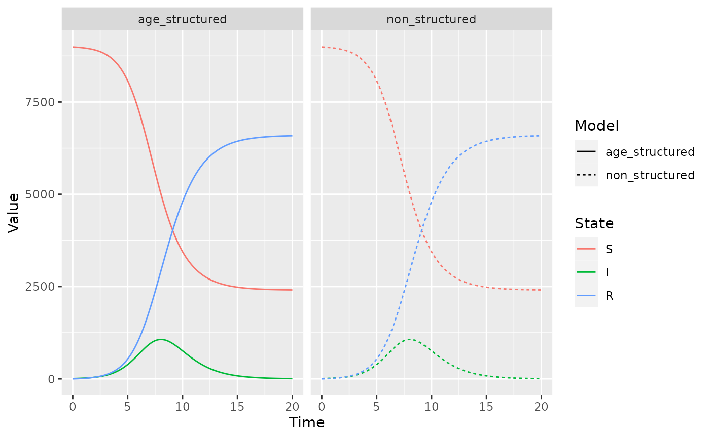
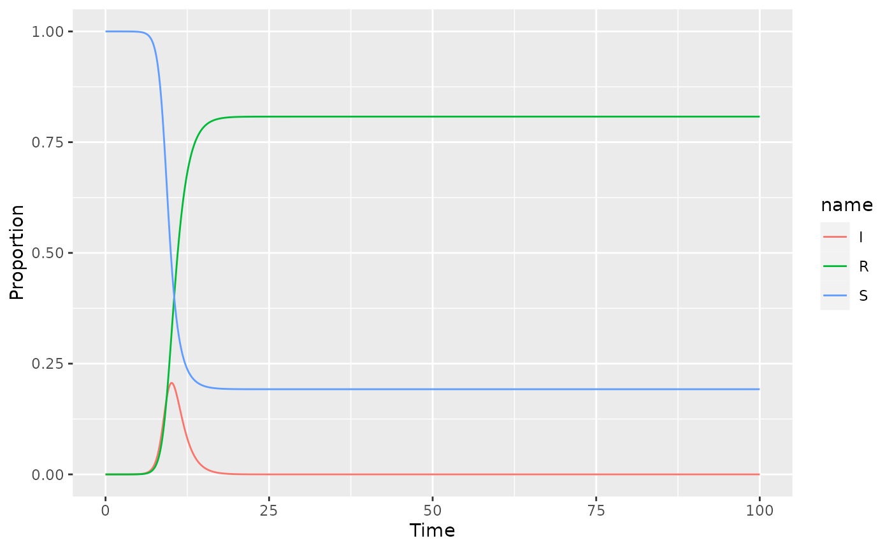
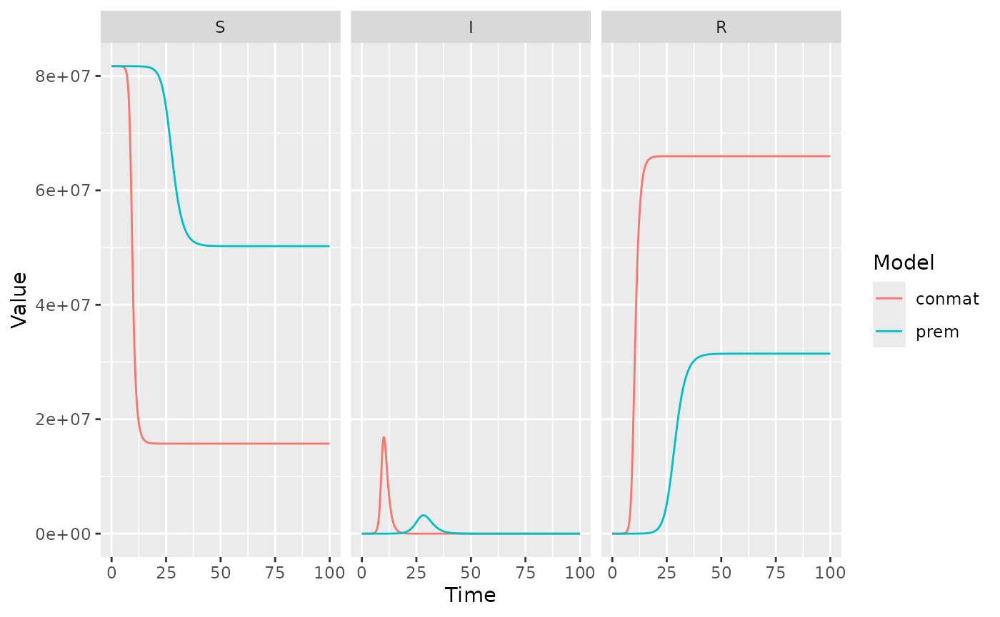

SIR modelling with conmat
sir-model.Rmd
library(conmat)
library(deSolve)
library(tidyr)
library(ggplot2)
library(dplyr)
#>
#> Attaching package: 'dplyr'
#> The following objects are masked from 'package:stats':
#>
#> filter, lag
#> The following objects are masked from 'package:base':
#>
#> intersect, setdiff, setequal, union
library(purrr)Introduction: What is an SIR model?
SIR (Susceptible, Infected, Recovered) models, sometimes known as compartmental models, are a mathematical modelling technique used to understand facets of an epidemic. They can help answer questions like:
- What is the duration of an epidemic?
- What is the total number of infected people?
- How does the disease spread?
- What is the reproductive number?
- What is the impact of a public health intervention?
The SIR refers to the number of:
- S: susceptible
- I: infected
- R: recovered / removed
people at a given time point. We can model how these numbers change at each time step, based on initial population numbers, and other parameters like how infection spreads (is it more likely to infect younger or older people?),
An SIR Model with homogenous mixing
We start with a complicated version of a relatively simple model: an age-stratified SIR Model, but with all age groups acting exactly the same.
We will use 17 age groups, each in 5 year age bands, and turn these
into a conmat_population object. This is an object that
knows which columns represent age and population, which is used by other
functions within conmat.
homogeneous_population <- data.frame(
age = seq(0, 80, by = 10),
population = rep(100, times = 9)
) |>
as_conmat_population(
age = age,
population = population
)
homogeneous_population
#> # A tibble: 9 × 2 (conmat_population)
#> - age: age
#> - population: population
#> age population
#> <dbl> <dbl>
#> 1 0 100
#> 2 10 100
#> 3 20 100
#> 4 30 100
#> 5 40 100
#> 6 50 100
#> 7 60 100
#> 8 70 100
#> 9 80 100Then, we extrapolate these into a set of contact matrices, which we
can construct using setting_prediction_matrix. We set these
as matrices of 1 - the contact rate is homogenous and exactly the
same.
age_breaks_0_80_plus <- c(seq(0, 80, by = 10), Inf)
mat_ones <- matrix(1, nrow = 9, ncol = 9)
# Relative number of contacts between individuals in 2 age categories
# Think of as P(contact)
homogeneous_contact <- setting_prediction_matrix(
home = mat_ones,
work = mat_ones,
school = mat_ones,
other = mat_ones,
age_breaks = age_breaks_0_80_plus
)
homogeneous_contact
#>
#> ── Setting Prediction Matrices ─────────────────────────────────────────────────
#> A list of matrices containing the model predicted contact rate between ages in
#> each setting.
#> There are 9 age breaks, ranging 0-80+ years, with a regular 10 year interval
#> • home: a 9x9 <matrix>
#> • work: a 9x9 <matrix>
#> • school: a 9x9 <matrix>
#> • other: a 9x9 <matrix>
#> • all: a 9x9 <matrix>
#> ℹ Access each <matrix> with `x$name`
#> ℹ e.g., `x$home`Similarly, we construct a set of transmission matrices, which provide
the probability of transmission for each age group, using
transmission_probability_matrix. These all have the same
transmission probability - 0.05 (1 in 20).
mat_05 <- matrix(0.05, nrow = 9, ncol = 9)
transmission_matrix <- transmission_probability_matrix(
home = mat_05,
work = mat_05,
school = mat_05,
other = mat_05,
age_breaks = age_breaks_0_80_plus
)
transmission_matrix
#>
#> ── Transmission Probability Matrices ───────────────────────────────────────────
#> A list of matrices, each <matrix> containing the relative probability of
#> individuals in a given age group infecting an individual in another age group,
#> for that setting.
#> There are 9 age breaks, ranging 0-80+ years, with a regular 10 year interval
#> • home: a 9x9 <matrix>
#> • work: a 9x9 <matrix>
#> • school: a 9x9 <matrix>
#> • other: a 9x9 <matrix>
#> ℹ Access each <matrix> with `x$name`
#> ℹ e.g., `x$home`We also need to set up our population structures. We’ll have all the
S states, then I, then R. Since we’re using deSolve to
solve this system, we need to make sure this order stays the same
throughout!
S0 <- rep(999, times = 9)
I0 <- rep(1, times = 9)
R0 <- rep(0, times = 9)
initial_condition <- c(S0, I0, R0)
names(initial_condition) <- paste(
rep(c("S0", "I0", "R0"), each = 9),
age_breaks_0_80_plus[1:9],
sep = "_"
)
initial_condition
#> S0_0 S0_10 S0_20 S0_30 S0_40 S0_50 S0_60 S0_70 S0_80 I0_0 I0_10 I0_20 I0_30
#> 999 999 999 999 999 999 999 999 999 1 1 1 1
#> I0_40 I0_50 I0_60 I0_70 I0_80 R0_0 R0_10 R0_20 R0_30 R0_40 R0_50 R0_60 R0_70
#> 1 1 1 1 1 0 0 0 0 0 0 0 0
#> R0_80
#> 0For an SIR model, we need to compute the force of infection, which is \[\lambda(t) = \beta I(t).\] The \(\beta\) term is the product of the probability of infection given contact, and the probability of contact, for which we can use the matrices we have just defined:
parameters <- list(
"transmission_matrix" = transmission_matrix,
"homogeneous_contact" = homogeneous_contact,
"gamma" = 1,
"s_indexes" = 1:9,
"i_indexes" = 10:18,
"r_indexes" = 19:27
)
parameters
#> $transmission_matrix
#>
#> ── Transmission Probability Matrices ───────────────────────────────────────────
#> A list of matrices, each <matrix> containing the relative probability of
#> individuals in a given age group infecting an individual in another age group,
#> for that setting.
#> There are 9 age breaks, ranging 0-80+ years, with a regular 10 year interval
#> • home: a 9x9 <matrix>
#> • work: a 9x9 <matrix>
#> • school: a 9x9 <matrix>
#> • other: a 9x9 <matrix>
#> ℹ Access each <matrix> with `x$name`
#> ℹ e.g., `x$home`
#>
#> $homogeneous_contact
#>
#> ── Setting Prediction Matrices ─────────────────────────────────────────────────
#> A list of matrices containing the model predicted contact rate between ages in
#> each setting.
#> There are 9 age breaks, ranging 0-80+ years, with a regular 10 year interval
#> • home: a 9x9 <matrix>
#> • work: a 9x9 <matrix>
#> • school: a 9x9 <matrix>
#> • other: a 9x9 <matrix>
#> • all: a 9x9 <matrix>
#> ℹ Access each <matrix> with `x$name`
#> ℹ e.g., `x$home`
#>
#> $gamma
#> [1] 1
#>
#> $s_indexes
#> [1] 1 2 3 4 5 6 7 8 9
#>
#> $i_indexes
#> [1] 10 11 12 13 14 15 16 17 18
#>
#> $r_indexes
#> [1] 19 20 21 22 23 24 25 26 27Now we construct a function for the age structured SIR model, to pass to deSolve. This calculates the force of infection for each setting.
age_structured_sir <- function(time, state, parameters) {
# Calculate the force of infection for each setting:
# unstructured SIR beta is age_group_n / pop_n
N_by_age <- map_dbl(
.x = parameters$s_indexes,
.f = function(i) {
current_indexes_to_sum <- c(
parameters$s_indexes[i],
parameters$i_indexes[i],
parameters$r_indexes[i]
)
sum(state[current_indexes_to_sum])
}
)
# normalise by the age population
N_infected_by_age <- state[parameters$i_indexes] / N_by_age
# functional method for takign the product of two matrices
product <- function(transmission, contact) {
map2(transmission, contact, `*`)
}
age_normalise <- function(beta) {
# matrix multiply by infected and normalise by age population
map(beta, function(beta) {
beta %*% N_infected_by_age
})
}
lambdas <- tibble(
setting = names(parameters$transmission_matrix),
transmission_matrix = parameters$transmission_matrix,
homogeneous_contact = parameters$homogeneous_contact[1:4]
) %>%
mutate(
beta = product(transmission_matrix, homogeneous_contact),
lambda = age_normalise(beta)
)
# Combine them all into one term for ease of computation
lambda_total <- Reduce("+", lambdas$lambda)
# Don't forget to normalise your infection rate by the population!
dSdt <- -lambda_total * state[parameters$s_indexes]
dIdt <- lambda_total * state[parameters$s_indexes] -
parameters$gamma * state[parameters$i_indexes]
dRdt <- parameters$gamma * state[parameters$i_indexes]
return(
list(
c(
dSdt,
dIdt,
dRdt
)
)
)
}Then we solve the ODE like so:
times <- seq(0, 20, by = 0.1)
homogeneous_soln <- ode(
y = initial_condition,
times = times,
func = age_structured_sir,
parms = parameters
)
# Have to convert ode output to a data frame to do any plotting
homogeneous_soln <- as.data.frame(homogeneous_soln) %>% as_tibble()Now, let’s compare this to an SIR model with no stratification - as in, no age groups:
parameters_sir <- c("beta" = 1.8, "gamma" = 1)
initial_condition_sir <- c("S" = 8991, "I" = 9, "R" = 0)
sir <- function(time, state, parameters) {
N <- sum(state)
lambda_total <- parameters["beta"] * state["I"]
dSdt <- -lambda_total / N * state["S"]
dIdt <- parameters["beta"] / N * state["S"] * state["I"] - parameters["gamma"] * state["I"]
dRdt <- parameters["gamma"] * state["I"]
return(list(c(dSdt, dIdt, dRdt)))
}
sir_soln <- ode(
y = initial_condition_sir,
times = times,
func = sir,
parms = parameters_sir
)
sir_soln <- as_tibble(as.data.frame(sir_soln))
ungrouped_structure <- sir_soln %>%
pivot_longer(cols = -time)
# we are going to tidy up ODE output a few times, so wrap it into a function:
tidy_ode <- function(ode_soln) {
ode_soln %>%
pivot_longer(cols = -time) %>%
mutate(parent_state = substr(name, 1, 1)) %>%
group_by(time, parent_state) %>%
summarise(value = sum(value)) %>%
ungroup() %>%
rename(name = parent_state)
}
# For the stratified model, we have to add up all the age categories together for a fair comparison.
grouped_structure <- tidy_ode(homogeneous_soln)
#> `summarise()` has grouped output by 'time'. You can override using the
#> `.groups` argument.
combined_solutions <- bind_rows(
"non_structured" = ungrouped_structure,
"age_structured" = grouped_structure,
.id = "type"
) %>%
mutate(
name = factor(name, levels = c("S", "I", "R"))
)
combined_solutions
#> # A tibble: 1,206 × 4
#> type time name value
#> <chr> <dbl> <fct> <dbl>
#> 1 non_structured 0 S 8991
#> 2 non_structured 0 I 9
#> 3 non_structured 0 R 0
#> 4 non_structured 0.1 S 8989.
#> 5 non_structured 0.1 I 9.75
#> 6 non_structured 0.1 R 0.937
#> 7 non_structured 0.2 S 8987.
#> 8 non_structured 0.2 I 10.6
#> 9 non_structured 0.2 R 1.95
#> 10 non_structured 0.3 S 8986.
#> # … with 1,196 more rowsNow let’s plot these two models approaches - the age structure and the non age structured:
gg_combined_solutions <- ggplot(
combined_solutions,
aes(x = time, y = value, colour = name, linetype = type)
) +
geom_line() +
labs(x = "Time", y = "Value", colour = "State", linetype = "Model")
gg_combined_solutions
Voila! These lines are the same! We can double check this by plotting them as facets:
gg_combined_solutions + facet_wrap(~type)
So, we have successfully collapsed our stratified model down to the non-stratified model, which is a great sense check for every time you write out a complicated model.
Comparison to other age matrices
Now that we’ve established an age-structured SIR model, we can repeat
the process with conmat matrices. This process is the same
as in the vignette, “Data Sources”.
world_data <- socialmixr::wpp_age() %>%
mutate(
new_lower_age = if_else(lower.age.limit >= 75, 75L, lower.age.limit)
) %>%
group_by(new_lower_age, country, year) %>%
summarise(
population = sum(population)
)
#> `summarise()` has grouped output by 'new_lower_age', 'country'. You can
#> override using the `.groups` argument.
germany_2015 <- age_population(
data = world_data,
location_col = country,
location = "Germany",
age_col = new_lower_age,
year_col = year,
year = 2015
)
germany_2015
#> # A tibble: 16 × 6 (conmat_population)
#> - age: lower.age.limit
#> - population: population
#> new_lower_age country year population lower.age.limit upper.age.limit
#> <int> <chr> <int> <dbl> <dbl> <dbl>
#> 1 0 Germany 2015 3517800 0 4
#> 2 5 Germany 2015 3507779 5 9
#> 3 10 Germany 2015 3693474 10 14
#> 4 15 Germany 2015 4101901 15 19
#> 5 20 Germany 2015 4571184 20 24
#> 6 25 Germany 2015 5213301 25 29
#> 7 30 Germany 2015 5058402 30 34
#> 8 35 Germany 2015 4782027 35 39
#> 9 40 Germany 2015 5190881 40 44
#> 10 45 Germany 2015 6805444 45 49
#> 11 50 Germany 2015 6920702 50 54
#> 12 55 Germany 2015 5998415 55 59
#> 13 60 Germany 2015 5091795 60 64
#> 14 65 Germany 2015 4216896 65 69
#> 15 70 Germany 2015 4225748 70 74
#> 16 75 Germany 2015 8812050 75 79Now let’s construct a non-homogenous contact matrix, and transmission probability matrix from the data we have on Germany.
age_breaks_socialmixr <- c(seq(0, 75, by = 5), Inf)
germany_contacts <- extrapolate_polymod(
population = germany_2015,
age_breaks = age_breaks_socialmixr
)
n_finite_states <- length(age_breaks_socialmixr) - 1
socialmixr_matrix <- matrix(0.1761765,
nrow = n_finite_states,
ncol = n_finite_states
)
transmission_matrix <- transmission_probability_matrix(
home = socialmixr_matrix,
work = socialmixr_matrix,
school = socialmixr_matrix,
other = socialmixr_matrix,
age_breaks = age_breaks_socialmixr
)
parameters <- list(
"transmission_matrix" = transmission_matrix,
"homogeneous_contact" = germany_contacts,
"gamma" = 1,
"s_indexes" = 1:n_finite_states,
"i_indexes" = (n_finite_states + 1):(2 * n_finite_states),
"r_indexes" = (2 * n_finite_states + 1):(3 * n_finite_states)
)
S0 <- germany_2015$population
I0 <- rep(1, times = n_finite_states)
R0 <- rep(0, times = n_finite_states)
initial_condition <- c(S0, I0, R0)
names(initial_condition) <- paste(
rep(c("S0", "I0", "R0"), each = n_finite_states),
age_breaks_socialmixr[1:n_finite_states],
sep = "_"
)Then, similar to above, we solve the ODE
times <- seq(0, 100, by = 0.1)
germany_soln <- ode(
y = initial_condition,
times = times,
func = age_structured_sir,
parms = parameters
)
# Have to convert ode output to a data frame to do any plotting
germany_soln <- as_tibble(as.data.frame(germany_soln))
head(germany_soln)
#> # A tibble: 6 × 49
#> time S0_0 S0_5 S0_10 S0_15 S0_20 S0_25 S0_30 S0_35 S0_40 S0_45
#> <dbl> <dbl> <dbl> <dbl> <dbl> <dbl> <dbl> <dbl> <dbl> <dbl> <dbl>
#> 1 0 3517800 3.51e6 3.69e6 4.10e6 4.57e6 5.21e6 5.06e6 4.78e6 5.19e6 6.81e6
#> 2 0.1 3517800. 3.51e6 3.69e6 4.10e6 4.57e6 5.21e6 5.06e6 4.78e6 5.19e6 6.81e6
#> 3 0.2 3517800. 3.51e6 3.69e6 4.10e6 4.57e6 5.21e6 5.06e6 4.78e6 5.19e6 6.81e6
#> 4 0.3 3517800. 3.51e6 3.69e6 4.10e6 4.57e6 5.21e6 5.06e6 4.78e6 5.19e6 6.81e6
#> 5 0.4 3517799. 3.51e6 3.69e6 4.10e6 4.57e6 5.21e6 5.06e6 4.78e6 5.19e6 6.81e6
#> 6 0.5 3517799. 3.51e6 3.69e6 4.10e6 4.57e6 5.21e6 5.06e6 4.78e6 5.19e6 6.81e6
#> # … with 38 more variables: S0_50 <dbl>, S0_55 <dbl>, S0_60 <dbl>, S0_65 <dbl>,
#> # S0_70 <dbl>, S0_75 <dbl>, I0_0 <dbl>, I0_5 <dbl>, I0_10 <dbl>, I0_15 <dbl>,
#> # I0_20 <dbl>, I0_25 <dbl>, I0_30 <dbl>, I0_35 <dbl>, I0_40 <dbl>,
#> # I0_45 <dbl>, I0_50 <dbl>, I0_55 <dbl>, I0_60 <dbl>, I0_65 <dbl>,
#> # I0_70 <dbl>, I0_75 <dbl>, R0_0 <dbl>, R0_5 <dbl>, R0_10 <dbl>, R0_15 <dbl>,
#> # R0_20 <dbl>, R0_25 <dbl>, R0_30 <dbl>, R0_35 <dbl>, R0_40 <dbl>,
#> # R0_45 <dbl>, R0_50 <dbl>, R0_55 <dbl>, R0_60 <dbl>, R0_65 <dbl>, …
tail(germany_soln)
#> # A tibble: 6 × 49
#> time S0_0 S0_5 S0_10 S0_15 S0_20 S0_25 S0_30 S0_35 S0_40 S0_45
#> <dbl> <dbl> <dbl> <dbl> <dbl> <dbl> <dbl> <dbl> <dbl> <dbl> <dbl>
#> 1 99.5 1103717. 463182. 2.46e5 2.79e5 5.09e5 4.81e5 4.57e5 4.64e5 4.75e5 4.60e5
#> 2 99.6 1103717. 463182. 2.46e5 2.79e5 5.09e5 4.81e5 4.57e5 4.64e5 4.75e5 4.60e5
#> 3 99.7 1103717. 463182. 2.46e5 2.79e5 5.09e5 4.81e5 4.57e5 4.64e5 4.75e5 4.60e5
#> 4 99.8 1103717. 463182. 2.46e5 2.79e5 5.09e5 4.81e5 4.57e5 4.64e5 4.75e5 4.60e5
#> 5 99.9 1103717. 463182. 2.46e5 2.79e5 5.09e5 4.81e5 4.57e5 4.64e5 4.75e5 4.60e5
#> 6 100 1103717. 463182. 2.46e5 2.79e5 5.09e5 4.81e5 4.57e5 4.64e5 4.75e5 4.60e5
#> # … with 38 more variables: S0_50 <dbl>, S0_55 <dbl>, S0_60 <dbl>, S0_65 <dbl>,
#> # S0_70 <dbl>, S0_75 <dbl>, I0_0 <dbl>, I0_5 <dbl>, I0_10 <dbl>, I0_15 <dbl>,
#> # I0_20 <dbl>, I0_25 <dbl>, I0_30 <dbl>, I0_35 <dbl>, I0_40 <dbl>,
#> # I0_45 <dbl>, I0_50 <dbl>, I0_55 <dbl>, I0_60 <dbl>, I0_65 <dbl>,
#> # I0_70 <dbl>, I0_75 <dbl>, R0_0 <dbl>, R0_5 <dbl>, R0_10 <dbl>, R0_15 <dbl>,
#> # R0_20 <dbl>, R0_25 <dbl>, R0_30 <dbl>, R0_35 <dbl>, R0_40 <dbl>,
#> # R0_45 <dbl>, R0_50 <dbl>, R0_55 <dbl>, R0_60 <dbl>, R0_65 <dbl>, …
germany_soln_long <- germany_soln %>%
tidy_ode() %>%
mutate(type = "age_structured")
#> `summarise()` has grouped output by 'time'. You can override using the
#> `.groups` argument.
germany_soln_long
#> # A tibble: 3,003 × 4
#> time name value type
#> <dbl> <chr> <dbl> <chr>
#> 1 0 I 16 age_structured
#> 2 0 R 0 age_structured
#> 3 0 S 81707799 age_structured
#> 4 0.1 I 18.5 age_structured
#> 5 0.1 R 1.72 age_structured
#> 6 0.1 S 81707795. age_structured
#> 7 0.2 I 21.5 age_structured
#> 8 0.2 R 3.72 age_structured
#> 9 0.2 S 81707790. age_structured
#> 10 0.3 I 24.9 age_structured
#> # … with 2,993 more rows
gg_germany_sir <- ggplot(
germany_soln_long,
aes(x = time, y = value / sum(initial_condition), colour = name)
) +
geom_line() +
labs(x = "Time", y = "Proportion")
gg_germany_sir
Let’s compare to the Prem matrices. Prem only has 16 age classes so we do need to re-do our population.
# NOTE - consider ways to present this data nicer
# str(prem_germany_contact_matrices)
as_setting_prediction_matrix(
prem_germany_contact_matrices,
age_breaks = seq(0, 80, by = 5)
)
#>
#> ── Setting Prediction Matrices ─────────────────────────────────────────────────
#> A list of matrices containing the model predicted contact rate between ages in
#> each setting.
#> There are 16 age breaks, ranging 0-80 years, with a regular 5 year interval
#> • home: a 16x16 <matrix>
#> • work: a 16x16 <matrix>
#> • school: a 16x16 <matrix>
#> • other: a 16x16 <matrix>
#> • all: a 16x16 <matrix>
#> ℹ Access each <matrix> with `x$name`
#> ℹ e.g., `x$home`So we go through a similar process, setting up parameters, and solving the ODE
parameters_prem <- list(
"transmission_matrix" = transmission_matrix,
"homogeneous_contact" = prem_germany_contact_matrices,
"gamma" = 1,
"s_indexes" = 1:n_finite_states,
"i_indexes" = (n_finite_states + 1):(2 * n_finite_states),
"r_indexes" = (2 * n_finite_states + 1):(3 * n_finite_states)
)
prem_soln <- ode(
y = initial_condition,
times = times,
func = age_structured_sir,
parms = parameters_prem
)
# Have to convert ode output to a data frame to do any plotting
prem_soln <- as_tibble(as.data.frame(prem_soln))
tail(prem_soln)
#> # A tibble: 6 × 49
#> time S0_0 S0_5 S0_10 S0_15 S0_20 S0_25 S0_30 S0_35 S0_40 S0_45
#> <dbl> <dbl> <dbl> <dbl> <dbl> <dbl> <dbl> <dbl> <dbl> <dbl> <dbl>
#> 1 99.5 2757450. 2.53e6 1.86e6 1.01e6 1.79e6 2.64e6 2.48e6 1.84e6 1.87e6 3.01e6
#> 2 99.6 2757450. 2.53e6 1.86e6 1.01e6 1.79e6 2.64e6 2.48e6 1.84e6 1.87e6 3.01e6
#> 3 99.7 2757450. 2.53e6 1.86e6 1.01e6 1.79e6 2.64e6 2.48e6 1.84e6 1.87e6 3.01e6
#> 4 99.8 2757450. 2.53e6 1.86e6 1.01e6 1.79e6 2.64e6 2.48e6 1.84e6 1.87e6 3.01e6
#> 5 99.9 2757450. 2.53e6 1.86e6 1.01e6 1.79e6 2.64e6 2.48e6 1.84e6 1.87e6 3.01e6
#> 6 100 2757450. 2.53e6 1.86e6 1.01e6 1.79e6 2.64e6 2.48e6 1.84e6 1.87e6 3.01e6
#> # … with 38 more variables: S0_50 <dbl>, S0_55 <dbl>, S0_60 <dbl>, S0_65 <dbl>,
#> # S0_70 <dbl>, S0_75 <dbl>, I0_0 <dbl>, I0_5 <dbl>, I0_10 <dbl>, I0_15 <dbl>,
#> # I0_20 <dbl>, I0_25 <dbl>, I0_30 <dbl>, I0_35 <dbl>, I0_40 <dbl>,
#> # I0_45 <dbl>, I0_50 <dbl>, I0_55 <dbl>, I0_60 <dbl>, I0_65 <dbl>,
#> # I0_70 <dbl>, I0_75 <dbl>, R0_0 <dbl>, R0_5 <dbl>, R0_10 <dbl>, R0_15 <dbl>,
#> # R0_20 <dbl>, R0_25 <dbl>, R0_30 <dbl>, R0_35 <dbl>, R0_40 <dbl>,
#> # R0_45 <dbl>, R0_50 <dbl>, R0_55 <dbl>, R0_60 <dbl>, R0_65 <dbl>, …
germany_aggregated <- tidy_ode(germany_soln)
#> `summarise()` has grouped output by 'time'. You can override using the
#> `.groups` argument.
# For the stratified model, we have to add up all the age categories together for a fair comparison.
prem_aggregated <- tidy_ode(prem_soln)
#> `summarise()` has grouped output by 'time'. You can override using the
#> `.groups` argument.
conmat_prem_soln <- bind_rows(
conmat = germany_aggregated,
prem = prem_aggregated,
.id = "type"
) %>%
mutate(name = factor(name, levels = c("S", "I", "R")))
head(conmat_prem_soln)
#> # A tibble: 6 × 4
#> type time name value
#> <chr> <dbl> <fct> <dbl>
#> 1 conmat 0 I 16
#> 2 conmat 0 R 0
#> 3 conmat 0 S 81707799
#> 4 conmat 0.1 I 18.5
#> 5 conmat 0.1 R 1.72
#> 6 conmat 0.1 S 81707795.
tail(conmat_prem_soln)
#> # A tibble: 6 × 4
#> type time name value
#> <chr> <dbl> <fct> <dbl>
#> 1 prem 99.9 I 2.82e-4
#> 2 prem 99.9 R 3.15e+7
#> 3 prem 99.9 S 5.02e+7
#> 4 prem 100 I 2.73e-4
#> 5 prem 100 R 3.15e+7
#> 6 prem 100 S 5.02e+7
ggplot(conmat_prem_soln, aes(x = time, y = value, colour = type)) +
geom_line() +
labs(x = "Time", y = "Value", colour = "Model") +
facet_wrap(~name, nrow = 1)
These are really different, but we have to be careful about why. The contact matrices might refer to the same quantity, but if we dive a little deeper, we find out that might not be the case…
Calculating reproductive number - R0
To fairly compare a dynamic disease model that differs only by it’s contact matrices, it’s important to remember that the \((i,j)\)th element of one of these matrices is the relative number of contacts between individuals of age \(i\) and age \(j\). But, what the number is relative to might be different, and this will lead to different basic reproduction numbers, which will give misleading model conclusions.
At this point, it is important to point out the two definitions of a next generation matrix.
- The next generation of the offspring distribution assuming infinite lifetime, which probabilists will be used to, and
- The number of newly infected individuals over the course of one generation of infections, which infectious diseases modellers will be used to.
conmat calculates the first of these in it’s functions
(such as generate_ngm), hence why the arguments to these
functions have no concept of an infectious period (which is analogous to
‘death’ in a branching process).
Following the approach of Diekmann, Heesterbrook and Roberts (2009),
one can think of the NGM generated by conmat as only the
transmissions term of Equation 2.9. So, to ensure both models have the
same value of \(R_0\), we can multiply
each matrix by a scaling factor to give a target \(R_0\).
To target \(R_0=1.5\) for example,
calculate_R0 <- function(multiplier, transmission_matrices, contact_matrices) {
total_matrix <- transmission_matrices$home * contact_matrices$home +
transmission_matrices$work * contact_matrices$work +
transmission_matrices$school * contact_matrices$school +
transmission_matrices$other * contact_matrices$other
abs(Re(eigen(total_matrix * multiplier)$values[1]) - 1.5)
}
scaling_factor <- function(contact_matrix) {
optimize(
f = calculate_R0,
interval = c(0.001, 5),
transmission_matrices = transmission_matrix,
contact_matrices = contact_matrix
)
}
scaling_factor_prem <- scaling_factor(prem_germany_contact_matrices)
scaling_factor_socialmixr <- scaling_factor(germany_contacts)
scaling_factor_prem$minimum
#> [1] 0.9999758
scaling_factor_socialmixr$minimum
#> [1] 0.5819233We can adjust our contact matrices with these factors, and then our R0s will be the same, meaning that the only difference between the two models should be differences in the contact matrices.
prem_germany_contact_matrices <- lapply(prem_germany_contact_matrices, `*`, scaling_factor_prem$minimum)
germany_contacts <- lapply(germany_contacts, `*`, scaling_factor_socialmixr$minimum)
parameters$homogeneous_contact <- germany_contacts
germany_soln <- ode(
y = initial_condition,
times = times,
func = age_structured_sir,
parms = parameters
)
parameters$homogeneous_contact <- prem_germany_contact_matrices
prem_soln <- ode(
y = initial_condition,
times = times,
func = age_structured_sir,
parms = parameters
)
germany_aggregated <- tidy_ode(as_tibble(as.data.frame(germany_soln)))
#> `summarise()` has grouped output by 'time'. You can override using the
#> `.groups` argument.
prem_aggregated <- tidy_ode(as_tibble(as.data.frame(prem_soln)))
#> `summarise()` has grouped output by 'time'. You can override using the
#> `.groups` argument.
conmat_prem_soln <- bind_rows(
conmat = germany_aggregated,
prem = prem_aggregated,
.id = "type"
) %>%
mutate(name = factor(name, levels = c("S", "I", "R")))
library(scales)
#>
#> Attaching package: 'scales'
#> The following object is masked from 'package:purrr':
#>
#> discard
conmat_prem_soln %>%
filter(time <= 50) %>%
ggplot(aes(x = time, y = value, colour = type)) +
geom_line() +
facet_wrap(~name,
ncol = 1,
scales = "free_y",
labeller = labeller(
name = c(
S = "Susceptible",
I = "Infected",
R = "Recovered"
)
)
) +
scale_y_continuous(
labels = label_number(scale_cut = cut_si("")),
n.breaks = 3
) +
scale_colour_brewer(palette = "Dark2") +
labs(x = "Time", y = "Population", colour = "Model") +
theme_minimal()
So now we have as fair of a comparison of the two matrices as we will get, and yet, there are significant differences in the dynamics of the two models.